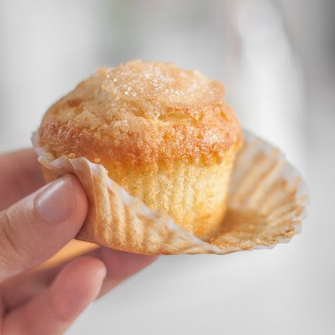
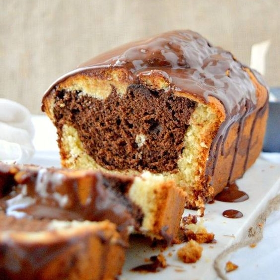

Colocar en un bowl metálico junto con 170g de manteca y fundir a baño maría.
Retirar del baño maría; añadir 250g de azúcar, 3 huevos y 1 yema. Mezclar.
Agregar 95g de harina previamente tamizada. Luego 100g de nueces.
Verter la preparación en una placa rectangular de 21 x 17 cm, enmantecada y con papel manteca.
Cocinar en el horno a temperatura media por aprox. 15 minutos.
Una vez cocidos, dejar enfriar a temperatura ambiente.
Cortar en cuadrados y servir.

Muffins
Mezclar 85g de manteca con 120g de azúcar hasta formar una pasta pálida y cremosa.
Agregar un huevo, una yema y la esencia de vainilla (a gusto).
Incorporar los ingredientes secos tamizados (215g de harina y 10g de polvo para hornear) intercalados con 120cc leche.
Por último añadir 100g de chocolitos.
Verter y dividir la preparación en los pirotines dentro de una muffinera hasta ¾ partes de su cavidad.
Cocinar en el horno a temperatura media por aprox. 15 minutos.

Budín marmolado
Batir la manteca blanda con el azúcar hasta obtener una preparación pálida y cremosa.
Añadir los huevos, la esencia de vainilla y mezclar.
Agregar alternadamente la leche y los ingredientes secos tamizados.
Dividir la preparación en 2 porciones.
Incorporar a una porción el chocolate semiamargo fundido y a otra el chocolate blanco fundido.
Colocar ambas preparaciones intercaladas en un molde para budín tapizado con papel manteca enmantecado y enharinado, hasta llenar las ¾ partes de su capacidad.
Cocinar en horno precalentado a temperatura media (180 °C) durante 55 minutos aprox. o hasta que, insertando un palillo, éste salga limpio.